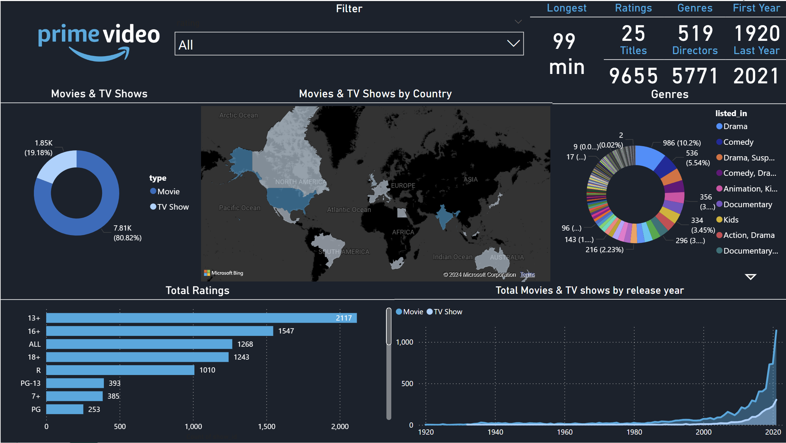

This Power BI project provides an in-depth analysis of Prime Video content, offering insights into various performance metrics and viewer preferences. The dashboard includes interactive visualizations that display key data points such as top-performing genres, most-watched shows and movies, user ratings, and regional viewing patterns. Advanced filtering options allow users to drill down into specific categories, facilitating a comprehensive understanding of content trends and audience behavior. This project demonstrates proficiency in data visualization, analytical thinking, and the ability to transform complex data sets into actionable insights.


The Adventure Works Power BI project delivers a detailed analysis of the company's sales and operational data. Utilizing the AdventureWorks database, this interactive dashboard presents key metrics such as sales performance, profit margins, customer demographics, and product categories. Users can explore data through dynamic visualizations, including sales trends over time, regional sales distribution, and top-performing products. The project showcases expertise in data modeling, DAX (Data Analysis Expressions), and creating user-friendly reports that enable stakeholders to make informed business decisions. This project highlights the ability to manage and analyze large datasets, providing valuable insights into business operations.

This Power BI project offers a comprehensive analysis of the performance and patient demographics of a hospital's emergency room (ER) using the provided dataset. The dashboard features interactive visualizations that highlight critical metrics such as:
Patient Demographics: Gender, age, race, and patient satisfaction scores.
Wait Times: Analysis of patient wait times and their correlation with various factors.
Department Referrals: Insights into the most common department referrals from the ER.
Admission Rates: Breakdown of patient admissions and their respective outcomes.
Key features of the project include advanced filtering capabilities, time series analysis to track changes over periods, and detailed breakdowns of patient satisfaction scores. This project showcases expertise in data cleaning, transformation, and the creation of meaningful visual representations to support decision-making in healthcare management.